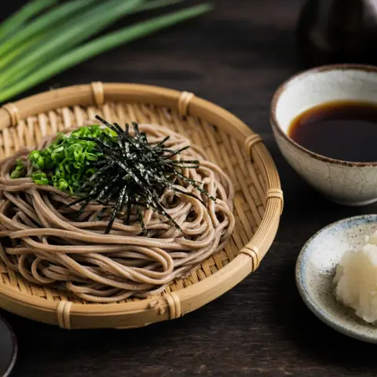

🥢 Mì soba lạnh (Zaru Soba)
Mì soba lạnh chấm nước dashi đậm đà với hành lá và wasabi. Thanh mát, xong trong 15 phút.
Nguyên liệu
- Mì soba180 g
- Hạt nêm dashi200 ml
- Nước tương50 ml
- Mirin50 ml
- Hành lá2 muỗng canh
- Mù tạt wasabi1 muỗng cà phê
- Rong biển nori1
Cách làm
- Đun dashi, nước tương và mirin ở lửa vừa. Khi lăn tăn sủi bọt, đun thêm 15 giây rồi tắt bếp để nguội.
- Luộc mì soba 4–6 phút hoặc theo hướng dẫn trên gói, khuấy 15 giây đầu cho sợi tơi.
- Đổ ra rổ, xả kỹ dưới vòi nước lạnh rồi lắc cho ráo.
- Bày mì ra đĩa, rắc rong biển cắt sợi, ăn kèm nước chấm, hành lá thái nhỏ và wasabi.
Nấu từng bước với app Yumwell
Hẹn giờ từng bước, danh sách đi chợ và thực đơn tuần. Miễn phí trên Google Play.